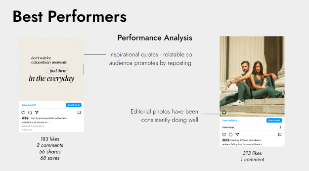

Strategy
I've had a lot of experience making sure Marketing appeals to target audience.
I do this through a lot of social listening, competitive analysis, etc.
Work at Wolven

Created decks summarizing Instagram performance

Analyzed Instagram performance to offer content ideas
Work at imre
○ Social listening using TalkWalker and organic search to see what clients' audiences are saying
○ Competitor audits
○ Created monthly decks on social media platform updates for clients to provide strategy insights